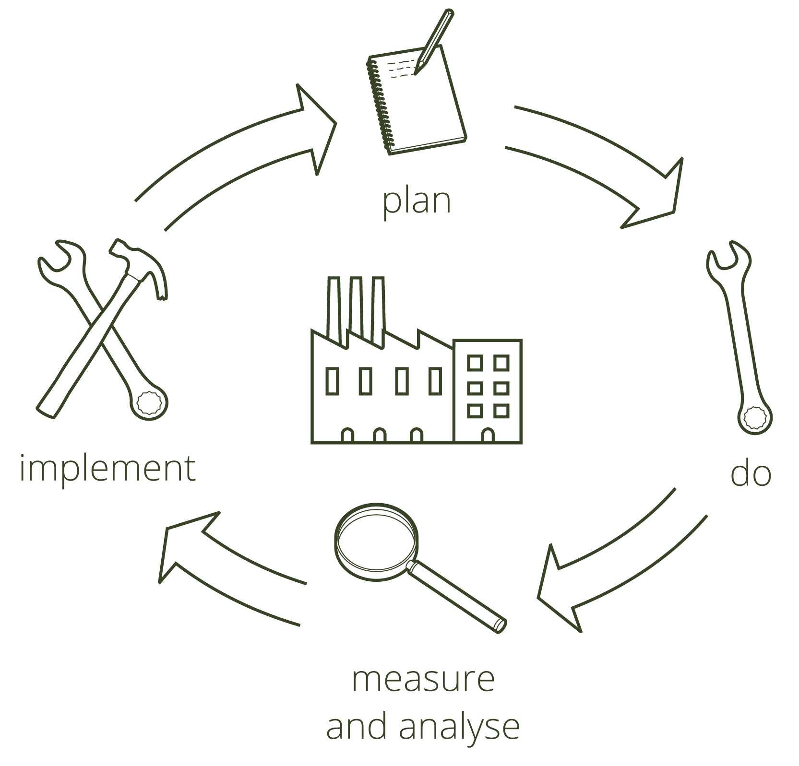

Experiencia
Nuestra experiencia internacional en proyectos estratégicos conseguida después de años de trabajo internacional principalmente en Henkel en proyectos de optimización de procesos:
- Proponer una reestructuración productiva en fábricas de bienes de consumo a través de la reubicación de producciones en Europa, Asia y USA
- Re diseño de portfolio de embalajes con el fin de armonizar y mejorar la flexibilidad de cambios de formato y los costes
- Coordinar las actividades productivas de los distintos procesos, ubicación de las producciones, inversiones, gestión presupuestaria, reducción de costes y optimización de procesos en colaboración con los jefes de fábrica, departamento de Compras, Ingenieria, , R&D, Planificación y Logística
- Actuar como Team Leader para la optimización de fàbricas y implementación de proyectos en Europa y Asia
- Llevar a cabo estudios de Benchmarking a nivel internacional, en Europa y EEUU, con el objetivo de definir la mejor estrategia productiva y orientar las inversiones para mejorar la productividad global de la compañía.
- Diseñar un sistema on-line que mide la eficiencia y la productividad en tiempo real para ayudar a los responsables de las plantas a tomar decisiones en tiempo real
- Diseñar un presupuesto interactivo que permite simular los efectos sobre los costes de potenciales cambios de volumen o mix de producción
- Optimizar la planificación de las fábricas con un modelo basado en SAP y Excel para plantas de bienes de consumo que mejoraba significativamente el Service reliability, los costes de producción, reducía los cuellos de botella, la utilización de mano de obra y los niveles de estoc.
- Promover estudios de factibilidad de alternativas fabricar o comprar analizando los ahorros, inversiones, timings y las consecuencias.
- Elaborar estudios de cambios de localización de producciones y cierre de plantas.
- Implementar los estudios seleccionados y conseguir los ahorros calculados con las inversiones y los timing definidos
- Optimizar la red logística con el fin de conseguir el menor nivel de estoc y garantizar un óptimo nivel de servicio y de costes
Mejora continua
Alcanzar la situación óptima en las operaciones requiere crear un flujo de información fiable que involucre a todo el equipo de trabajo con una mentalidad positiva para resolver los problemas y una continua comparación entre lo que se ha hechor respecto a lo que se debería haber hecho en base a los estándares establecidos en términos de eficiencia, productividad, costes…
Conseguir la eficiencia y la efectividad a través de un proceso continuo de feed-back que integre el mix de producción, los rendimientos y las medidas de mejora en el día día de la fábrica.
Haciendo esto seremos capaces de detectar los problemas e implementar medidas correctoras y al mismo tiempo construiremos una base sólida de confianza y de trabajo en equipo y que seremos capaces de aprender de nosotros mismos
Aspectos analizados
- Portfolio de productos
- Estructura de producción
- Aconsejar soluciones para mejorar la planificación y el seguimiento de su cumplimiento en términos de volúmenes y plazos de entrega
- Análisis de la estructura productiva
- Definición de los KPI’s más relevantes para hace su seguimiento
- Diseñar e implementar un sistema simple y fiable para seguir las actividades productivas y ayudar al análisis diario de las operaciones
- Seguimiento de las incidencias y de los motivos que las generan
- Estudio y implementación de soluciones ad-hoc (sencillos, fiables, y efectivos) para la mejora continua y que impliquen a todo el personal productivo
- Comprobar y evaluar el impacto de las medidas adoptadas
- Hacer ajustadas previsiones del nivel de costes futuros
- Preparación de resúmenes y informes de evolución de los principales indicadores